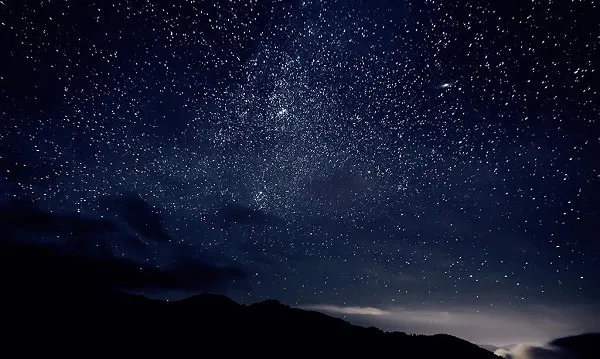
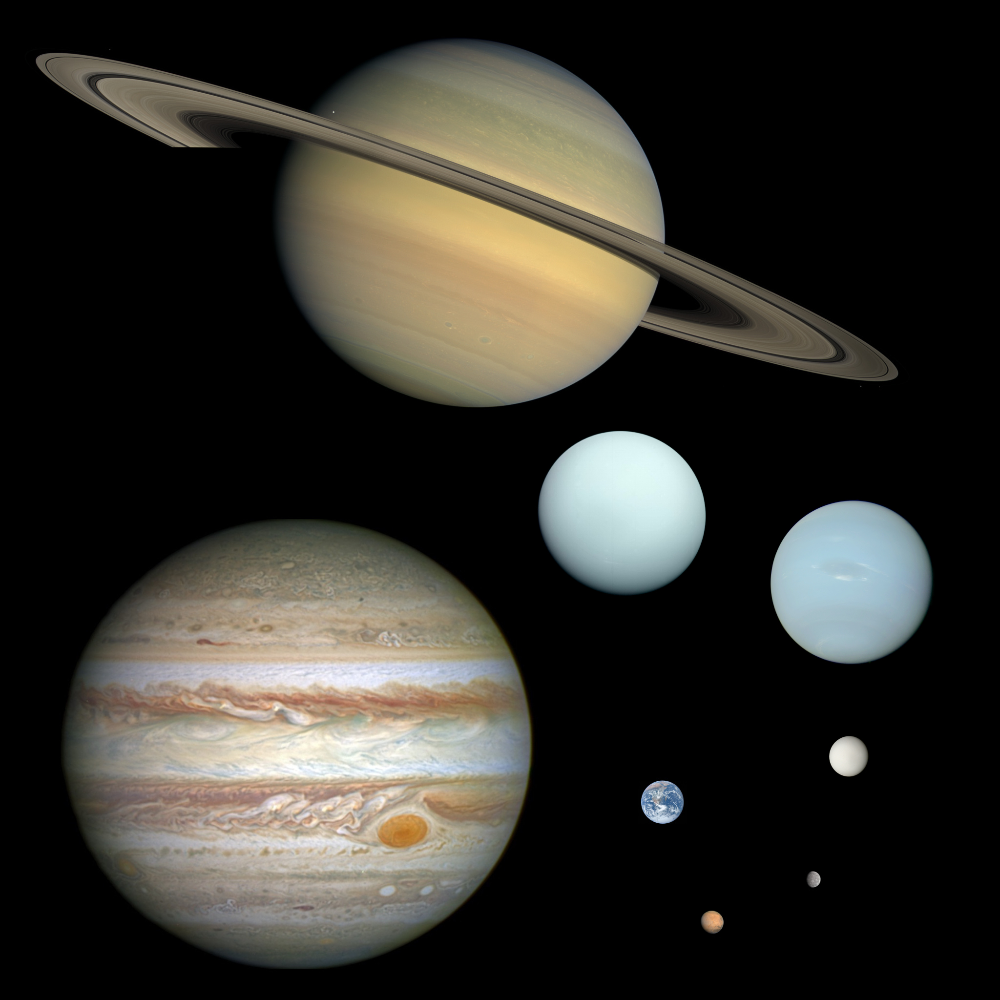
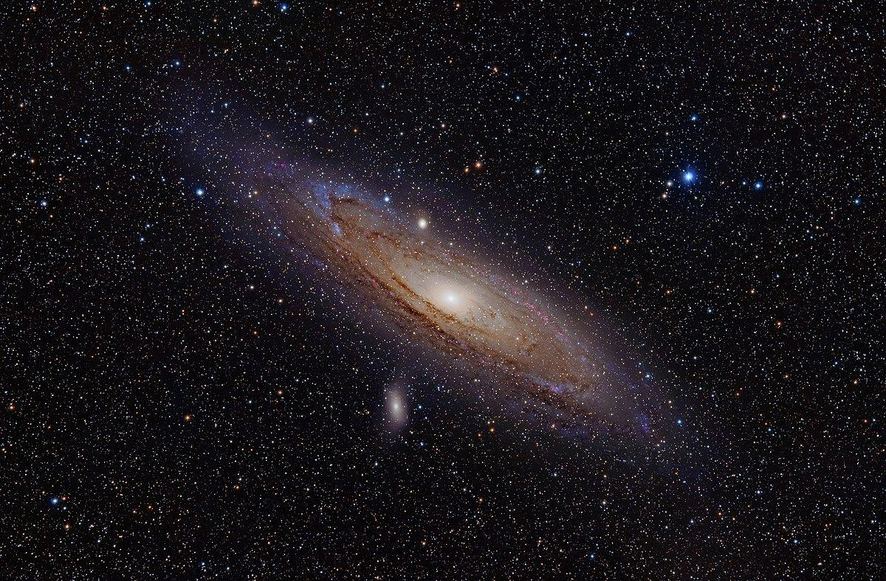
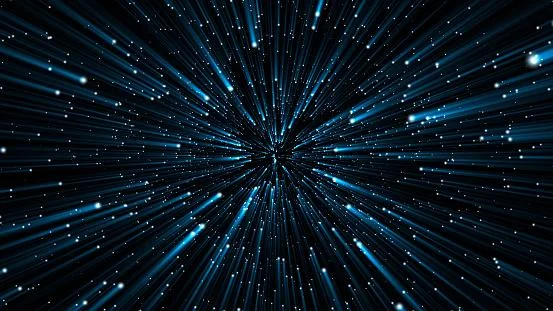

✨ Estrelas: O que são e do que são feitas

Estrelas são astros esféricos formados por plasma, que brilham com luz própria graças à fusão nuclear que ocorre em seus núcleos. Essa fusão, que transforma hidrogênio em hélio, libera uma enorme quantidade de energia, irradiada para o espaço. O Sol é a estrela mais próxima da Terra e também sua principal fonte de energia.
Elas se formam a partir do colapso de nuvens de gás e poeira, compostas majoritariamente por hidrogênio. Ao longo de sua vida, uma estrela pode produzir elementos mais pesados que o hélio, seja no processo de fusão ou em explosões de supernovas, contribuindo para a criação de novos corpos celestes.
A massa de uma estrela determina seu ciclo de vida e destino final. Estrelas massivas podem evoluir para supergigantes e terminar como buracos negros, enquanto outras se tornam anãs brancas ou estrelas de nêutrons. Além disso, muitas estrelas não estão sozinhas: elas fazem parte de sistemas binários, aglomerados ou até mesmo galáxias inteiras.
Com instrumentos como o Diagrama de Hertzsprung-Russell, os astrônomos conseguem analisar propriedades como idade, temperatura, brilho e composição das estrelas, revelando segredos importantes sobre o universo e sua evolução.
🌍 Planetas Terrestres e Gasosos: Diferenças

Os planetas do sistema solar podem ser divididos em duas grandes categorias: terrestres e gasosos. Os planetas terrestres, como Mercúrio, Vênus, Terra e Marte, são compostos principalmente por rochas e metais. Eles possuem uma superfície sólida e firme, e geralmente estão localizados mais próximos ao Sol. Esses planetas têm atmosferas mais finas, originadas de processos geológicos, e apresentam menor tamanho e massa quando comparados aos planetas gasosos.
Por outro lado, os planetas gasosos, também chamados de gigantes gasosos, incluem Júpiter, Saturno, Urano e Netuno. Eles são compostos principalmente por gases como hidrogênio e hélio, e não possuem uma superfície sólida definida — o que vemos são camadas densas de nuvens e gases. Esses planetas são muito maiores, menos densos e estão situados nas regiões mais externas do sistema solar. A atmosfera deles foi capturada diretamente da nebulosa solar durante a formação do sistema.
Enquanto os planetas terrestres se destacam por suas superfícies rochosas e tamanho compacto, os gasosos impressionam por seu enorme volume, estrutura em camadas e presença de anéis e diversos satélites naturais. Essas diferenças são fundamentais para entender a formação e a organização do nosso sistema solar.
🌌 Galáxias e a Galáxia Andrômeda

Galáxias são enormes sistemas formados por estrelas, gases, poeira cósmica e uma grande quantidade de matéria escura, unidos pela gravidade. Elas podem variar de pequenas galáxias anãs com milhões de estrelas até gigantes com trilhões. O nome "galáxia" vem do grego "galaxias", que significa "leitoso", em referência à aparência da Via Láctea no céu noturno.
Existem diferentes tipos de galáxias, classificadas principalmente por sua forma: elípticas, espirais (como a Via Láctea), e irregulares. Interações gravitacionais entre galáxias podem alterar sua forma e aumentar a formação de novas estrelas, criando fenômenos chamados de galáxias starburst.
Observações indicam que a maioria das galáxias possui buracos negros supermassivos em seus centros, os quais influenciam diretamente na atividade galáctica. A matéria escura representa cerca de 90% da massa total das galáxias, embora ainda não seja completamente compreendida.
Estima-se que existam cerca de 2 trilhões de galáxias no universo observável, separadas por milhões de parsecs. Elas estão organizadas em grupos, aglomerados e superaglomerados, que formam grandes estruturas como filamentos e muralhas cósmicas.
Uma das galáxias mais conhecidas além da Via Láctea é a Galáxia de Andrômeda (M31), que foi inicialmente chamada de nebulosa espiral por William Herschel. Mais tarde, descobriu-se que se tratava de uma galáxia completa. Andrômeda é a galáxia espiral mais próxima da nossa e está a cerca de 2,5 milhões de anos-luz de distância. Ela está em rota de colisão com a Via Láctea, e as duas devem se fundir em bilhões de anos.
A história do termo "galáxia" também tem raízes mitológicas: segundo a lenda grega, a faixa de luz da Via Láctea teria se formado a partir do leite derramado pela deusa Hera enquanto amamentava o bebê Hércules, tornando o nome ainda mais simbólico.
⚡ A Luz e sua Velocidade

A luz, ou luz visível, é uma forma de radiação eletromagnética que pode ser percebida pelo olho humano. Ela ocupa uma faixa do espectro eletromagnético entre os comprimentos de onda de 400 a 700 nanômetros, entre o infravermelho e o ultravioleta.
As principais propriedades da luz visível incluem intensidade, direção de propagação, espectro de frequência (ou comprimento de onda) e polarização. No vácuo, sua velocidade é de aproximadamente 299.792.458 metros por segundo — uma das constantes fundamentais da física.
Em física, o termo "luz" pode abranger toda radiação eletromagnética, como micro-ondas, ondas de rádio, raios X e até raios gama. A luz se comporta tanto como onda quanto como partícula, fenômeno conhecido como dualidade onda-partícula. Quando absorvida, sua energia se manifesta como fótons — as partículas fundamentais da luz.
Essa natureza complexa é estudada pela área da física chamada ótica, que investiga o comportamento e as propriedades da luz em diversas situações.
A principal fonte de luz natural na Terra é o Sol. No passado, o fogo foi uma importante fonte de iluminação, desde fogueiras até lamparinas. Com o avanço da tecnologia, a luz elétrica tornou-se predominante no cotidiano humano.
⬅️ Voltar para a Página Inicial